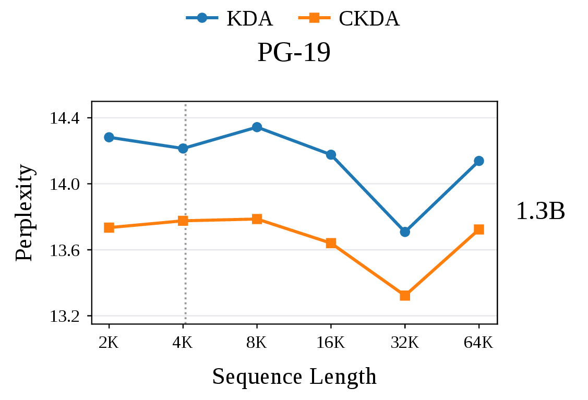

Bringing Dynamics into Model Design
We usually describe sequence models through their architecture: an attention rule, a state-space parameterization, a gating mechanism, or an efficient recurrent update. These choices determine how information is written, retained, and read. They also raise a more basic question: once information enters the hidden state, how does it evolve over time?
A recurrent sequence model is a discrete-time dynamical system. If we temporarily set aside new writes, its state evolves through a transition:
A transition can shrink a state, preserve selected directions, rotate it in a plane, or move information between memory slots. These behaviors determine how a stored signal changes over time.
Same Retention, Different Dynamics
State norm · 1.00 in bothOne initial signal, no new writes. Change how fast it fades and how it moves.
Decay
Keep the direction.
Oscillation
Turn while fading.
Try zero decay: both states keep their size, while the oscillating state keeps turning.
From Recurrences to Differential Equations
Differential equations describe how a state evolves in continuous time. A linear homogeneous system has the form \(\dot S(\tau)=A(\tau)S(\tau)\), where \(A\) is its generator. Holding the generator fixed over an interval of length \(\Delta_t\) gives an exact discrete transition:
Conversely, when \(T_t\) admits a real matrix logarithm, we can construct \(A_t=\log(T_t)/\Delta_t\). The transition’s eigenvalues and invariant subspaces tell us which components decay, persist, or change phase.
Different Architectures, Related Dynamics
Different architectures can produce similar state dynamics. The examples below reach decay and oscillation from two starting points.
Starting from an oscillator
LinOSS (Rusch & Rus, 2025) starts from driven linear oscillators. For a nonzero scalar frequency, its continuous-time dynamics can be written as
Without the forcing term, the first-order state \((x,\dot x)\) has generator eigenvalues \(\pm i\omega\). Rescaling position and velocity reveals a two-dimensional rotation. D-LinOSS (Boyer et al., 2025) adds learnable damping. In our notation, a mode takes the form
When \(0<a<\omega_0\), the generator eigenvalues are \(-a\pm i\sqrt{\omega_0^2-a^2}\). The state both loses amplitude and advances in phase. This describes the continuous system without forcing. The discrete behavior also depends on the chosen discretization.
Starting from selective decay
Mamba-1 (Gu & Dao, 2024) uses selective state spaces. With its real, negative diagonal parameterization, a homogeneous state mode follows \(z_t=\rho_tz_{t-1}\), \(0<\rho_t<1\). The input controls retention. With the parameters held fixed, the corresponding continuous system is \(\dot z=-a_tz\), where \(a_t=-\log\rho_t/\Delta_t\).
Mamba-2 (Dao & Gu, 2024) reorganizes computation through structured state-space duality and uses a scalar state transition within each head. Without new writes, the state still undergoes selective decay. Mamba-3 (Lahoti et al., 2026) adds phase evolution through complex state updates. In a suitable real coordinate system, a rotary pair follows
Here, \(\rho_t\) sets decay and \(\theta_t\) advances phase. With \(\nu_t=\theta_t/\Delta_t\) and \(J=\left[\begin{smallmatrix}0&-1\\1&0\end{smallmatrix}\right]\),
D-LinOSS adds damping to an oscillator. Mamba-3 adds rotation to a decaying state. In suitable coordinates and with parameters held fixed, both give decay plus rotation. Eliminating one coordinate of a rotating pair gives
For \(a>0\) and \(\nu\ne0\), this is an underdamped oscillator, just as in D-LinOSS above.
Linear Attention: Which Directions Should Forget?
Now consider a matrix state that stores key–value associations. We write its update with the transition acting from the left:
The same \(T_t\) acts on every value column. We can therefore analyze one column \(s_t\in\mathbb R^{d_k}\) through \(s_t=T_ts_{t-1}\). Below, keys have unit norm, and we first consider positive gates with \(0<\beta_t<1\). Each model summary describes one head’s homogeneous transition on a state column, with the current key and gates held fixed.
DeltaNet: forgetting along the current key
DeltaNet (Yang et al., 2024) writes a correction to the association currently stored at the key:
Let \(P_t=k_tk_t^\top\). Since \(\|k_t\|_2=1\), \(P_t\) is an orthogonal projector. The component parallel to the key shrinks by \(1-\beta_t\). The orthogonal component stays unchanged:
The corresponding continuous system is \(\dot s=-b_tP_ts\), with \(b_t=-\log(1-\beta_t)/\Delta_t\). DeltaNet implements relaxation in an input-selected direction.
Gated DeltaNet: adding a common forgetting rate
Gated DeltaNet (Yang et al., 2025) adds a scalar forget gate \(0<\alpha_t<1\), giving \(T_t=\alpha_t(I-\beta_tP_t)\).
To see how this acts in different directions, split a state column into \(s=s_\parallel+s_\perp\), where \(s_\parallel=P_t s\) is parallel to the current key and \(k_t^\top s_\perp=0\). Since the key has unit norm, \(P_t s_\parallel=s_\parallel\), while
Applying the full transition therefore gives
The delta factor leaves every component orthogonal to the current key unchanged, so its retention factor is just \(\alpha_t\). The key component receives both the shared factor \(\alpha_t\) and the extra factor \(1-\beta_t\), giving \(\alpha_t(1-\beta_t)\).
Because \(I\) and \(P_t\) commute, its generator is
This separates shared forgetting from the extra correction along the key.
KDA: different decay rates across coordinates
Kimi Delta Attention (KDA) (Kimi Team, 2025) replaces the scalar gate with a diagonal gate:
The diagonal gate scales each state coordinate by \(\alpha_{t,i}\). The delta correction can then mix coordinates, so we need to analyze their combined effect.
With \(0<\alpha_{t,i}<1\) and \(0<\beta_t<1\), hold the current key and gates fixed over an interval \(\Delta>0\). Drop the time index and write \(H=I-\beta kk^\top\), so \(T=HD\). Rescaling the state by \(D^{1/2}\) gives the transition
This matrix is symmetric. Since \((1-\beta)I\preceq H\preceq I\), its eigenvalues satisfy
Let \(U\) be an orthogonal matrix satisfying \(\widetilde T=U\operatorname{Diag}(\lambda_j)U^\top\). First rescale the state by \(D^{1/2}\), then rotate it by \(U^\top\):
Since \(0<\lambda_j<1\), each transformed coordinate decays. The corresponding continuous dynamics over the interval \(\Delta\) are
Larger \(\gamma_j\) means faster decay. Smaller \(\gamma_j\) means longer retention. These coordinates generally differ from the original state axes, and their retention factors \(\lambda_j\) reflect both the diagonal gate and the delta correction. This coordinate system can change when the key or gates change.
So far, the key and gates control which components decay and how quickly. Can the state also oscillate while it is retained?
Complex KDA: Oscillation Through Signed Gates
Complex KDA (CKDA) (Siems et al., 2026) expands KDA’s gate ranges, allowing a state to rotate as well as decay:
For a two-dimensional example with fixed gates and key, choose \(0<\rho<1\) and \(0<\theta<\pi/2\). A signed gate and the delta correction give
Its eigenvalues are \(\rho e^{\pm2i\theta}\), a non-real conjugate pair that gives damped oscillation.
The necessary conditions follow from symmetry. Write \(T=HD\), where \(H=I-\beta kk^\top\) and \(\|k\|_2=1\). If \(\beta<1\), then \(H\) is positive definite, and
The matrix on the right is symmetric, so all eigenvalues are real. The case \(\beta=1\) follows by continuity. If all \(\alpha_i\ge0\), the determinant identity gives
Since \(D^{1/2}HD^{1/2}\) is symmetric, this also forces a real spectrum. Thus a non-real conjugate pair requires both \(\beta>1\) and \(\alpha_i<0\) for at least one \(i\). These are necessary conditions, not a guarantee of oscillation.
To count the possible oscillatory pairs, first assume the gates are distinct and nonzero, ordered as \(\alpha_1<\cdots<\alpha_d\), and that every key coordinate is nonzero. The characteristic polynomial is
Between two adjacent gates of the same sign, the expression in parentheses is continuous and runs from one sign of infinity to the other. It must therefore cross zero, giving a real eigenvalue. At most one interval separates negative and positive gates, so at least \(d-2\) intervals contain a real root. This leaves at most two non-real roots. Because \(T\) is real, they must form at most one non-real conjugate pair. The same bound holds for repeated or zero gates and zero key coordinates by continuity.
In our Mamba-3 blog post (Liang & Song, 2026), we observed lower long-context perplexity in models trained with oscillation. To explore long-context behavior in linear attention, we also evaluated the officially released CKDA and KDA models on PG-19 (Rae et al., 2019) and LongBench-E (Bai et al., 2024).
PG-19: lower perplexity beyond the training context
CKDA maintains lower perplexity than KDA from 2K to 64K, including beyond the 4K training context reported by Siems et al. (2026).

LongBench-E: gains vary by task
CKDA averages 13.90 across the 13 tasks, compared with 12.75 for KDA, and scores higher on 8 of them.
| Model | QA | MQA | HQA | 2WM | GR | MN | TR | TQA | SS | PC | PR | LCC | RB | Avg. |
|---|---|---|---|---|---|---|---|---|---|---|---|---|---|---|
| KDA | 5.61 | 13.32 | 6.80 | 7.95 | 9.11 | 10.34 | 23.00 | 23.69 | 24.75 | 3.24 | 6.47 | 14.96 | 16.52 | 12.75 |
| CKDA | 5.87 | 13.36 | 6.76 | 8.23 | 8.99 | 7.60 | 30.00 | 26.66 | 26.06 | 3.14 | 5.89 | 18.58 | 19.59 | 13.90 |
CKDA performs better than KDA in these evaluations. It achieves lower PG-19 perplexity at every tested context length from 2K to 64K and a higher average score on LongBench-E, with gains on 8 of the 13 tasks.
Momentum: Another Route to Oscillation
Momentum DeltaNet (MDN) (Huang et al., 2026) adds a momentum state \(M_t\) to the memory update:
Hold the scalar coefficients and unit key fixed, and set aside new writes. Let \(s_n\) and \(m_n\) be a memory column and its momentum. Their updates are \(m_{n+1}=\mu m_n+\alpha\eta Ps_n\) and \(s_{n+1}=\alpha s_n-\beta m_{n+1}\), where \(P=kk^\top\) projects onto the key direction.
Each direction has two components: memory and momentum. Since \(Pk=k\) and \(Pe=0\) for \(e\perp k\), the key direction has the block \(B\). Each of the \(d_k-1\) perpendicular directions has an independent block \(B_\perp\):
\(B_\perp\) is triangular, so its eigenvalues \(\alpha\) and \(\mu\) are real. For the key block, write \(c=\alpha(1-\beta\eta)+\mu\). Its eigenvalues are roots of
Only the key block can have non-real eigenvalues. Its quadratic has just two roots, so the transition has at most one conjugate pair. The pair appears when \(c^2<4\alpha\mu\). With \(0<\alpha,\mu<1\), its modulus is \(\sqrt{\alpha\mu}<1\), so the oscillation decays over time.
What Are the Limits of a Single Oscillator?
A single oscillator, represented by one non-real conjugate pair, has one oscillation frequency. Its linear readouts can differ in amplitude and phase, but they share that frequency. Suppose two pieces of memory need different rotation speeds: 20° and 50° per step. The demo shows why one fixed oscillator cannot sustain both frequencies.
Can One Pair Match Two Frequencies?
Each curve shows a coordinate of a rotating state. Solid curves are targets, and dashed curves are linear readouts. With one pair, both readouts share a frequency. All curves start at the same value and use the same decay. Try Match A, then Match B.
Target A · 20° / step
MatchesTarget B · 50° / step
Different frequencyA matches. B needs a different frequency.
The targets correspond to two independent state pairs, with \(\phi_A=20^\circ\), \(\phi_B=50^\circ\), and \(\rho=0.98\):
Here \(\oplus\) places the two rotations in separate blocks. Each contributes a distinct non-real conjugate pair. Within one head and state column, the fixed CKDA and MDN transitions above have at most one pair. Therefore they cannot exactly maintain both independent rotations with a fixed linear state encoding.
Changing coordinates preserves eigenvalues. A wider state must also contain both target pairs to reproduce these rotations. To see why, suppose \(s=Ez\) encodes the target state \(z\) without losing information. Exact one-step updates require
If \(T_\star v=\lambda v\), then \(\mathsf T(Ev)=\lambda(Ev)\), with \(Ev\ne0\). Every target eigenvalue must therefore also appear in the model transition. A wider state with only one oscillatory pair still cannot reproduce both target frequencies exactly.
This bound concerns one fixed transition. Multiple heads or compositions of different transitions can combine more frequencies. CyFA, which we consider next, supports several oscillatory pairs within a single transition, with related frequencies.
From Rotation to Memory Transport
CyFA (Chen et al., 2026) moves information through memory slots using cyclic shifts. Each head maintains separate key and value states over \(m\) relative-time slots:
Here, \(K_t\in\mathbb R^{m\times d_k}\), \(V_t\in\mathbb R^{m\times d_v}\), and \(e_0\) selects the first slot. The clock increment \(\delta_t\in(0,1)\) controls a fractional cyclic shift \(P(\delta_t)\). The gate \(\alpha_t\) controls decay and \(\beta_t\) controls writing, with both gates in \((0,1)\). This shift operator is different from the key projector used earlier. Existing information moves before the new key and value are written into slot zero.
Transport in slot space, oscillation in Fourier space
For an odd number of slots \(m=2p+1\), an orthogonal real Fourier basis \(\Phi\) decomposes the shift into a constant mode and \(p\) cosine–sine pairs:
In Fourier coordinates, cyclic transport rotates each cosine–sine pair. With no new writes, each pair follows \(z_{t,j}=\alpha_tR(\omega_j\delta_t)z_{t-1,j}\), with eigenvalues
Because \(0<\omega_j\delta_t<\pi\), all \(p=(m-1)/2\) pairs are non-real. Each gives a local damped oscillator after setting \(a_t=-\log\alpha_t/\Delta_t\) and \(\nu_{t,j}=\omega_j\delta_t/\Delta_t\). The constant mode only decays.
Compare the same memory state with and without shifting. In slot coordinates, a shift moves its signed coefficients between slots. In Fourier coordinates, it rotates each cosine–sine pair. The two rows below show the same states in different coordinates.
One State, Two Coordinate Systems
State norm · 1.00 in bothStart with one write in slot 0. Top: slot values. Bottom: Fourier pairs. Both columns retain 95% of the state per step. Only the right column shifts.
Slots: decay
Slots: decay + shift
Fourier: decay
Fourier: decay + rotation
Many modes, coupled controls
CyFA has multiple oscillatory pairs, but it cannot set their frequencies independently. Their phase increments obey
All modes share one learned clock increment and one decay coefficient. The Fourier subspaces and frequency ratios are fixed by the transport structure. At \(m=5\), for example, the second pair rotates through twice the angle of the first. The two pairs therefore cannot use angles \(\pi/10\) and \(\pi/3\) in the same update.
CyFA's oscillators have fixed frequency ratios, and their number is set by the slot count \(m\). For odd \(m\), each state column has \((m-1)/2\) oscillatory pairs. Increasing \(m\) adds more pairs whose frequencies remain tied to the same learned clock.
How transported states are written and read
Let \(W\in\mathbb R^{m\times m}\) be the learned readout matrix, using a different symbol from the rotation \(R\). Omitting dot-product scaling, CyFA reads
The matrix \(W\) can mix Fourier modes at readout without changing the homogeneous transition. Starting with zero states, define the cumulative clock \(\ell_t=\sum_{r=1}^t\delta_r\), a retained write weight \(\gamma_{t,i}=\beta_i\prod_{r=i+1}^t\alpha_r\), and a relative-time coefficient vector \(c_{t,i}=P(\ell_t-\ell_i)e_0\). Unrolling the recurrences gives
The effective coefficient on a historical value is \(\gamma_{t,i}(\pi_t^\top Wc_{t,i})\). It depends on elapsed learned time, decay, and the full set of query–key matches through the softmax. Fractional shifts are orthogonal but need not be entrywise nonnegative, so \(c_{t,i}\) is a signed coefficient vector, not a probability distribution.
A moving coordinate system can transfer rotation from the recurrence into the writes and readout. Define \(\overline K_t=\mathcal R(-\ell_t)\Phi^\top K_t\), and similarly for \(\overline V_t\). With \(b=\Phi^\top e_0\) and \(u_t=\mathcal R(-\ell_t)b\), the updates become
The original states are recovered as \(K_t=\Phi\mathcal R(\ell_t)\overline K_t\) and likewise for \(V_t\) before readout. This is a time-dependent coordinate transformation, so it does not contradict the non-real spectrum in fixed Fourier coordinates. The same model can thus place rotation in the state update or in the writes and readout, depending on the coordinates.
Dynamics as a Design Dimension
Beyond asking whether a model oscillates, we can ask how many oscillatory modes it supports, which controls they share, whether their subspaces change with the input, and how the model writes and reads in those coordinates.
| Design question | Examples in this post |
|---|---|
| Which directions forget? | DeltaNet selects the current key direction. Gated DeltaNet adds shared decay. |
| How many retention timescales? | KDA uses coordinate-wise gates and allows different decay rates in transformed coordinates. |
| Can a step advance phase? | Mamba-3 uses rotary pairs, CKDA composes reflections, and MDN couples state and momentum. |
| How many non-real pairs per column? | At most one for CKDA and the scalar-gated MDN analyzed here. CyFA’s active slot transition has \((m-1)/2\). |
| Which modes can be controlled independently? | CyFA’s harmonics share a learned clock and a common decay rate. |
| Can the mode subspaces change? | CKDA and MDN can change their local modes with the input. CyFA uses fixed Fourier subspaces. |
| How does phase organize memory? | CyFA’s learned clock controls transport across slots and the relative-time coefficients used at readout. |
Writing, readout, input dependence, multiple heads, and composition across layers also shape what a complete model can compute. Studying state dynamics lets us examine one part of that design in detail.
These questions suggest experiments. Does a task benefit from more oscillatory modes? Should each pair have its own phase and decay controls, or should modes share a clock? Does allowing their subspaces to change with the input help? How much memory and computation do these choices require, and can the updates still be trained efficiently in parallel?
Back to dynamics. We do not claim that oscillatory dynamics are always better. We hope to treat state dynamics as one dimension of model design, looking beyond memory decay and erasure.
Memory has a lifetime, but it also has a trajectory.
References
- Yushi Bai, Xin Lv, Jiajie Zhang, Hongchang Lyu, Jiankai Tang, Zhidian Huang, Zhengxiao Du, Xiao Liu, Aohan Zeng, Lei Hou, Yuxiao Dong, Jie Tang, and Juanzi Li (2024). LongBench: A Bilingual, Multitask Benchmark for Long Context Understanding. ACL.
- Jared Boyer, T. Konstantin Rusch, and Daniela Rus (2025). Learning to Dissipate Energy in Oscillatory State-Space Models. arXiv:2505.12171.
- Yixiao Chen, Shuojin Yang, and Shi-Min Hu (2026). CyFA: Linear Sequence Modeling with Relative-Time-Partitioned Memory. arXiv:2609.36259.
- Tri Dao and Albert Gu (2024). Transformers are SSMs: Generalized Models and Efficient Algorithms Through Structured State Space Duality. ICML.
- Albert Gu and Tri Dao (2024). Mamba: Linear-Time Sequence Modeling with Selective State Spaces. COLM.
- Yulong Huang, Xiang Liu, Hongxiang Huang, Xiaopeng Lin, Zunchang Liu, Xiaowen Chu, Zeke Xie, and Bojun Cheng (2026). MDN: Parallelizing Stepwise Momentum for Delta Linear Attention. arXiv:2605.05838.
- Kimi Team (2025). Kimi Linear: An Expressive, Efficient Attention Architecture. arXiv:2510.26692.
- Aakash Lahoti, Kevin Y. Li, Berlin Chen, Caitlin Wang, Aviv Bick, J. Zico Kolter, Tri Dao, and Albert Gu (2026). Mamba-3: Improved Sequence Modeling using State Space Principles. ICLR.
- Shutian Liang and Yue Song (2026). Understanding Mamba-3 Through Oscillatory Dynamics. Preprint. Read Part I.
- Jack W. Rae, Anna Potapenko, Siddhant M. Jayakumar, and Timothy P. Lillicrap (2019). Compressive Transformers for Long-Range Sequence Modelling. arXiv:1911.05507.
- T. Konstantin Rusch and Daniela Rus (2025). Oscillatory State-Space Models. ICLR.
- Julien Siems, Riccardo Grazzi, Korbinian Pöppel, Jaisidh Singh, Arber Zela, Timur Carstensen, Jenia Jitsev, Frank Hutter, Volkan Cevher, Antonio Orvieto, and Aaron Klein (2026). Complex KDA: Understanding and Enhancing the Expressivity of Kimi Delta Attention. arXiv:2609.24797. Released models.
- Songlin Yang, Bailin Wang, Yu Zhang, Yikang Shen, and Yoon Kim (2024). Parallelizing Linear Transformers with the Delta Rule over Sequence Length. NeurIPS.
- Songlin Yang, Jan Kautz, and Ali Hatamizadeh (2025). Gated Delta Networks: Improving Mamba2 with Delta Rule. ICLR.
Citation
If you find this post useful, please cite it as:
@misc{liang2026backtodynamics,
title = {{Back to Dynamics}: Designing Sequence Models Through Their State Dynamics},
author = {Liang, Shutian and Song, Yue},
year = {2026},
howpublished = {Blog post}
}